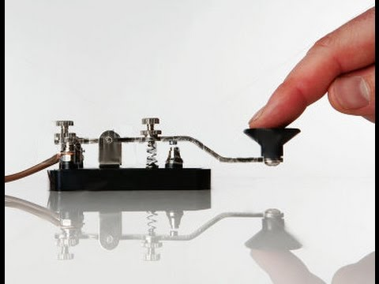
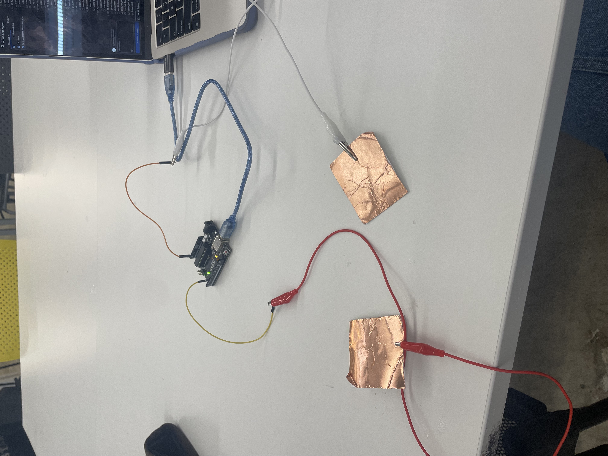
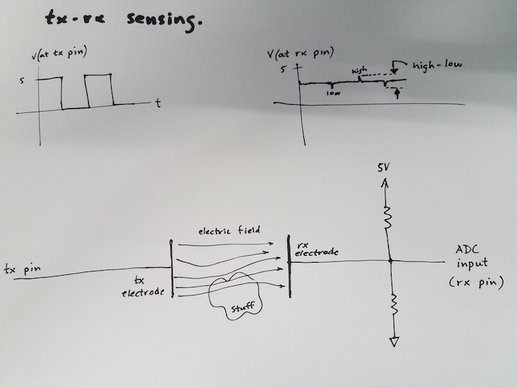
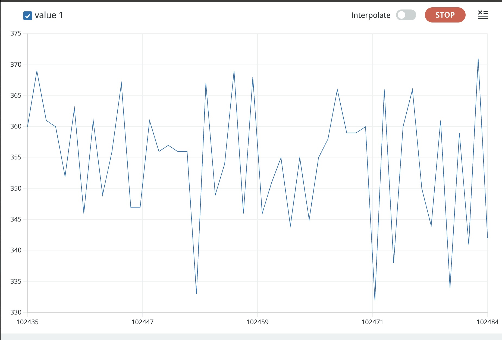
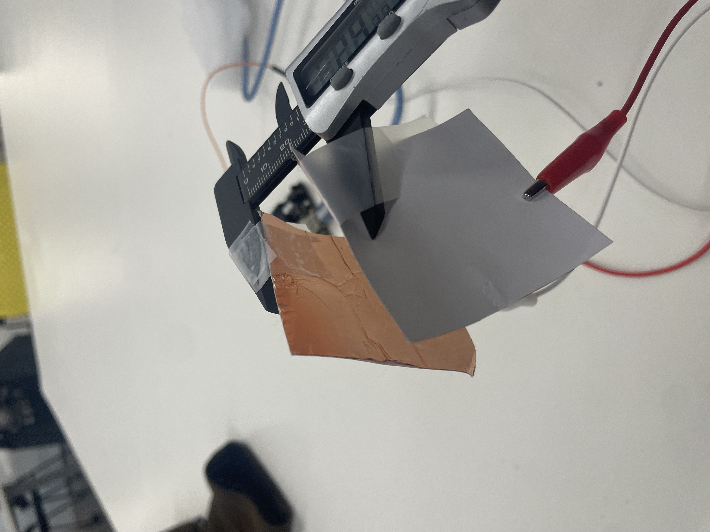
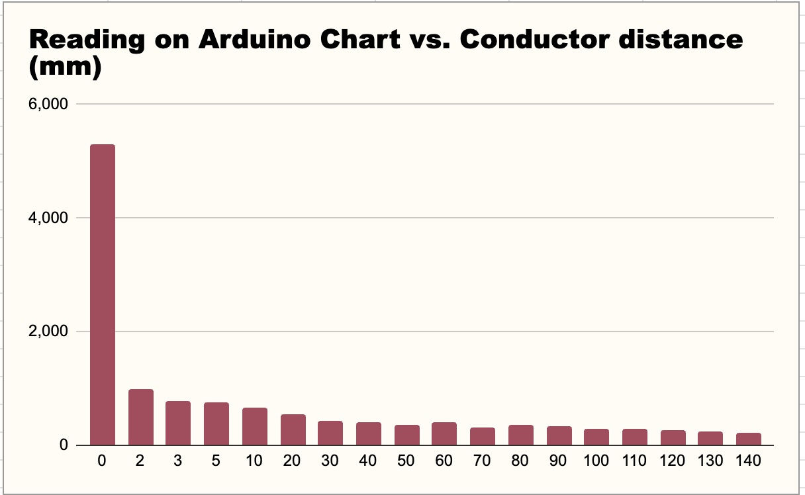
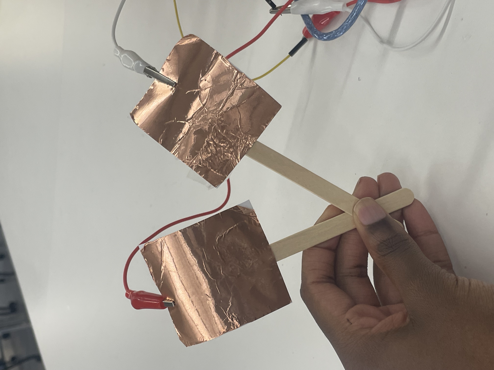
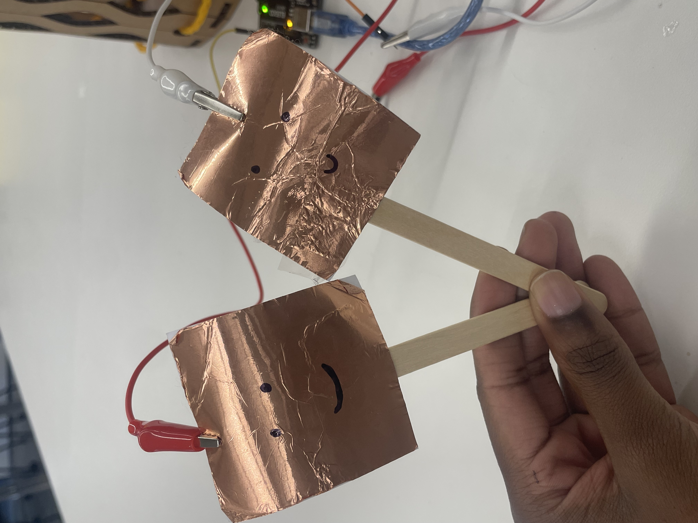
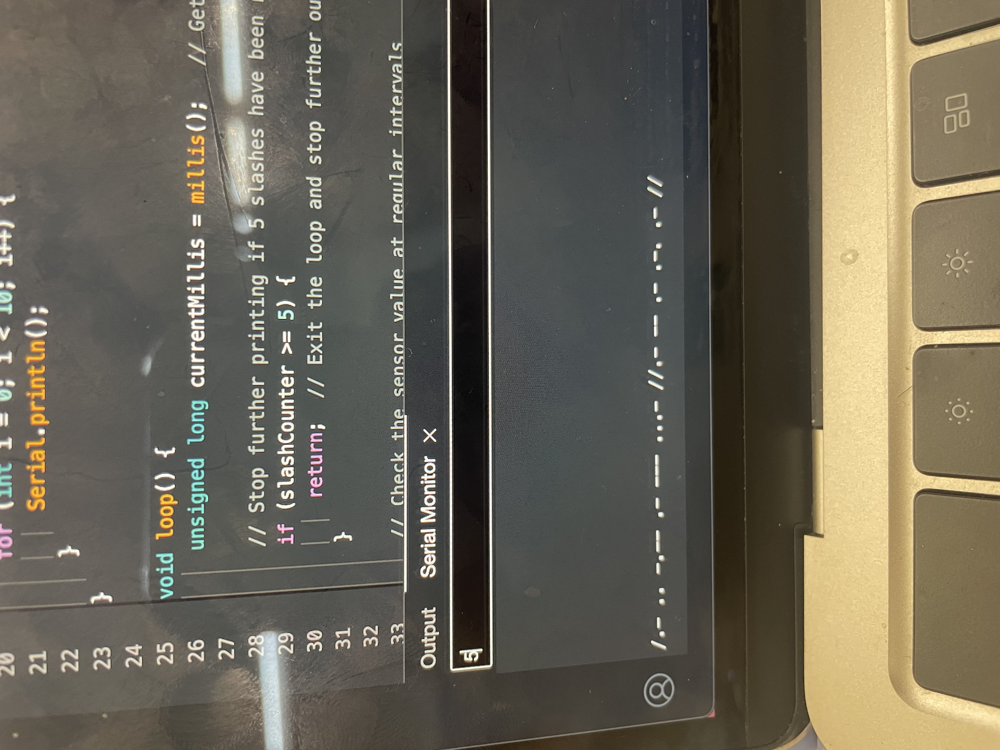
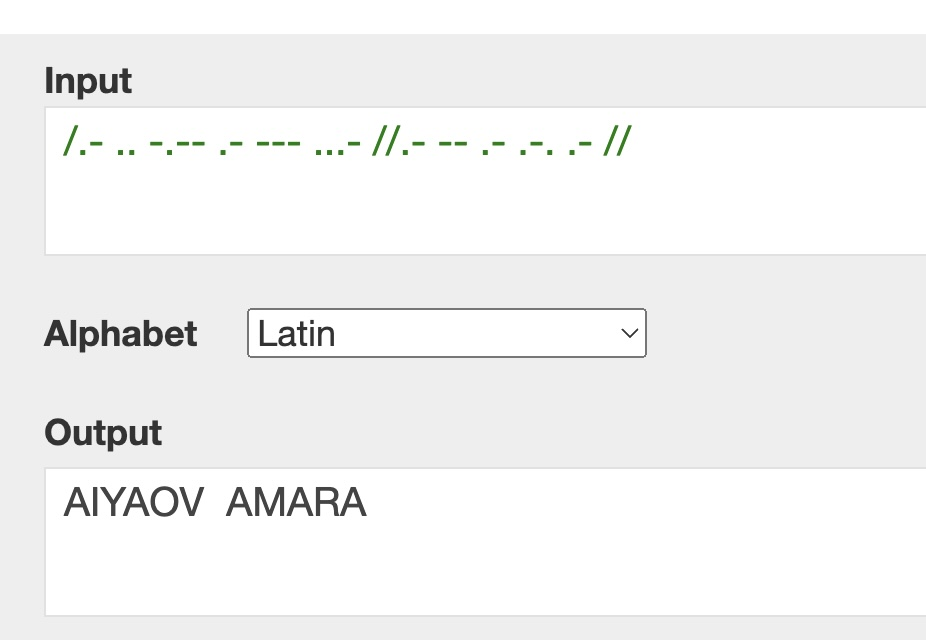

<div class="textcontainer">
<p class="margin"> </p>
<h3>Assignment 1: Capacitive Sensor<h3>
<p class="margin"> </p>
<h4> Okay here's my dream capacitive sensor: <br>

<p class="margin"> </p>
<br> It's a morse code encoder that relies on the distance between two sensors to determine dots and dashes and slashes and stuff. so far this is what I have: <br>
<p class="margin"> </p>

<p class="margin"> </p>
<br> I used the tx-rx capacitor sensing schematic from the intro to capacitance slide on the PS70 website: <br>

<p class="margin"> </p>
<br> Awesome. The next step is to figure out how to collect data for calibration of the sensor!
and turn this: <br>
<p class="margin"> </p>

<p class="margin"> </p>
into something useful. <br>
<p class="margin"> </p>
here is the code that I'm using to take measurements for my data collection. Note that I have a 1000 ms Delay jut to make it easier to read for data collection. I will be deleting this when it's action time: <br>
<p class="margin"> </p>
<!-- Arduino Code Block -->
<pre><code class="language-cpp">
long result; // Variable for the result of the tx_rx measurement
int analog_pin = A3; // Analog input pin
int tx_pin = 4; // Digital output pin
unsigned long previousMillis = 0; // Stores the last time the result was printed
const long interval = 500; // Interval at which to print (in milliseconds)
void setup() {
pinMode(tx_pin, OUTPUT); // Pin 4 provides the voltage step
Serial.begin(9600); // Begin serial communication at 9600 baud rate
}
void loop() {
unsigned long currentMillis = millis(); // Get the current time in milliseconds
// Check if the time interval has passed (500 ms in this case)
if (currentMillis - previousMillis >= interval) {
previousMillis = currentMillis; // Save the current time for the next comparison
result = tx_rx(); // Call the tx_rx function to get the result
}
}
long tx_rx() { // Function to execute tx_rx algorithm
int read_high;
int read_low;
int diff;
long int sum;
int N_samples = 100; // Number of samples to take
sum = 0;
for (int i = 0; i < N_samples; i++) {
digitalWrite(tx_pin, HIGH); // Step the voltage high on conductor 1
read_high = analogRead(analog_pin); // Measure response of conductor 2
delayMicroseconds(10); // Delay to reach steady state
digitalWrite(tx_pin, LOW); // Step the voltage to zero on conductor 1
read_low = analogRead(analog_pin); // Measure response of conductor 2
diff = read_high - read_low; // Difference between high and low readings
sum += diff; // Sums up N_samples of these measurements
}
return sum; // Return the sum as the result
}
</code></pre>
<p class="margin"> </p>
okay after coming up with some sketchy capcitor measuring methods...<br>

here is my final graph: <br>

<p class="margin"> </p>
As we can see, as the two copper plates touch each other, the value exceeds 5000 units! This is going to be useful in programming my morse code encoder. I want to alter my code so that once the value exceeds 5000 units, it will print a dot out on the screen. To do this I just added this line of code: <br>
<p class="margin"> </p>
<pre><code class="language-cpp">
Copy code
if (result > 5000) {
Serial.print("."); // Print a period if result is greater than 5000
}
</code></pre>
<br>
added this to make a clear space to print:
<pre><code class="language-cpp">
// Print newlines to simulate clearing the screen
for (int i = 0; i < 10; i++) {
Serial.println(); // Print 10 newlines to create space
}
</code></pre>
<br>
and deleted this line:
<pre><code class="language-cpp">
Serial.println(result);
</code></pre>
Also: (also), I added popsicle sticks to my coppers in order to make them easier to tap:

Should I add smiley faces to them?
<p class="margin"> </p>

<p class="margin"> </p>
Too late. I've already done it. Copper and Coppertino are lovers. <br>
<p class="margin"> </p>
Here they are in action: <br>
<p class="margin"> </p>
<video class="centered-video" width="600" controls>
<source src="./DotAndDash.mp4" type="video/mp4">
Your browser does not support the video tag.
</video>
<p class="margin"> </p>
As you can see, I've added dashes with some more timer and if functions. Now I want to get to the fun part. I've found this on google: <br>
<p class="margin"> </p>
<p> <br><b>Dot length:</b> A dot is one unit long. <br>
<b>Dash length:</b> A dash is three units long. <br>
<b>Space between parts of a letter:</b> The space between a dot and a dash in the same letter is one unit. <br>
<b>Space between letters:</b> The space between letters is three units. <br>
<b>Space between words:</b> The space between words is seven units. <br>
</p>
<p class="margin"> </p>
Let's update the arduino code to match this. I had some help from chatGPT to make this code, which is pretty accurate in recording different touches and spaces between words:
<p class="margin"> </p>
<pre><code class="language-cpp">
long result; // Variable for the result of the tx_rx measurement
int analog_pin = A3; // Analog input pin
int tx_pin = 4; // Digital output pin
unsigned long previousMillis = 0; // Stores the last time the result was checked
unsigned long aboveThresholdMillis = 0; // Stores the time when the value first exceeded 5000
const long unitTime = 500; // One unit of time in milliseconds (1 second)
const long dashTime = 3 * unitTime; // Time for a dash (3 units)
const long wordSpaceTime = 7 * unitTime; // Time for word space (7 units)
bool aboveThreshold = false; // Flag to indicate if the value is above 5000
bool letterInProgress = false; // Flag to track if we're in the middle of a letter
void setup() {
pinMode(tx_pin, OUTPUT); // Pin 4 provides the voltage step
Serial.begin(9600); // Begin serial communication at 9600 baud rate
// Print 10 blank lines for clarity
for (int i = 0; i < 10; i++) {
Serial.println();
}
}
void loop() {
unsigned long currentMillis = millis(); // Get the current time in milliseconds
// Check the sensor value at regular intervals
result = tx_rx(); // Call the tx_rx function to get the result
// Check if result exceeds 5000
if (result > 5000) {
if (!aboveThreshold) { // If it's the first time the value goes above 5000
aboveThresholdMillis = currentMillis; // Record the time it went above 5000
aboveThreshold = true; // Set the flag to true
}
// If it's been above 5000 for more than 2 units (2 seconds), print a dash
else if (currentMillis - aboveThresholdMillis >= dashTime) {
Serial.print("-"); // Print a dash for a long press (dash)
delay(unitTime); // Delay for one unit (space between parts of a letter)
previousMillis = currentMillis; // Reset the timer after printing a dash
}
} else {
// If result is below or drops below 5000
if (aboveThreshold) {
// If it was above 5000, check how long it stayed above
if (currentMillis - aboveThresholdMillis < dashTime) {
Serial.print("."); // Print a dot for a short press (dot)
previousMillis = currentMillis; // Reset the timer after printing a dot
}
aboveThreshold = false; // Reset the flag
letterInProgress = true; // Mark that we're in the middle of a letter
}
// If there's a pause after the letter and no further input, add spacing
if (letterInProgress && currentMillis - previousMillis >= 3 * unitTime) {
Serial.print(" "); // Print space between letters (3 units)
letterInProgress = false; // Reset letter progress flag
previousMillis = currentMillis; // Reset the timer after printing a space between letters
}
// If there's an even longer pause, add word spacing
if (currentMillis - previousMillis >= wordSpaceTime) {
Serial.print("/"); // Print slash for word space (7 units)
previousMillis = currentMillis; // Reset the timer after printing a space between words
}
}
}
long tx_rx() { // Function to execute tx_rx algorithm
int read_high;
int read_low;
int diff;
long int sum;
int N_samples = 100; // Number of samples to take
sum = 0;
for (int i = 0; i < N_samples; i++) {
digitalWrite(tx_pin, HIGH); // Step the voltage high on conductor 1
read_high = analogRead(analog_pin); // Measure response of conductor 2
delayMicroseconds(10); // Delay to reach steady state
digitalWrite(tx_pin, LOW); // Step the voltage to zero on conductor 1
read_low = analogRead(analog_pin); // Measure response of conductor 2
diff = read_high - read_low; // Desired answer is the difference between high and low
sum += diff; // Sums up N_samples of these measurements
}
return sum; // Return the sum as the result
}
<p class="margin"> </p>
</code></pre>
<br>
um so basically this relies on a timer that resets after everytime a new character is recorded. The unit of time right now is half of a second, meaning you will need to hold copper and coppertino together for 3 seconds in order to record a dash. Here they are in action:
<p class="margin"> </p>
<video class="centered-video" width="600" controls>
<source src="./DotDashAndSpace.mp4" type="video/mp4">
Your browser does not support the video tag.
</video>
<p class="margin"> </p>
Pretty cool awesome awesome awesome!!!
<p class="margin"> </p>
Okay so here is my first attempt at typing my name, Aiyanna Amara, using this method:
<p class="margin"> </p>

<p class="margin"> </p>
Here's what it actually says:
<p class="margin"> </p>

<p class="margin"> </p>
I mean it's not my name, but for a first attempt close enough!! <br>
<p class="margin"> </p>
Okay here is my circuit Schematic:
<p class="margin"> </p>
<iframe src="https://assets.pinterest.com/ext/embed.html?id=707698528991366399" height="604" width="450" frameborder="0" scrolling="no" ></iframe>
<p class="margin"> </p>
<h3>Assignment 2: [Use + Calibrate Another Sensor]</h3>
<p class="margin"> </p>
Here are some blinking lights!:
<p class="margin"> </p>
<iframe src="https://assets.pinterest.com/ext/embed.html?id=707698528991366277" height="900" width="450" frameborder="0" scrolling="no" ></iframe>
<p class="margin"> </p>
And a schematic for them:
<p class="margin"> </p>
<iframe src="https://assets.pinterest.com/ext/embed.html?id=707698528991366533" height="608" width="450" frameborder="0" scrolling="no" ></iframe>
<p class="margin"> </p>
</div>